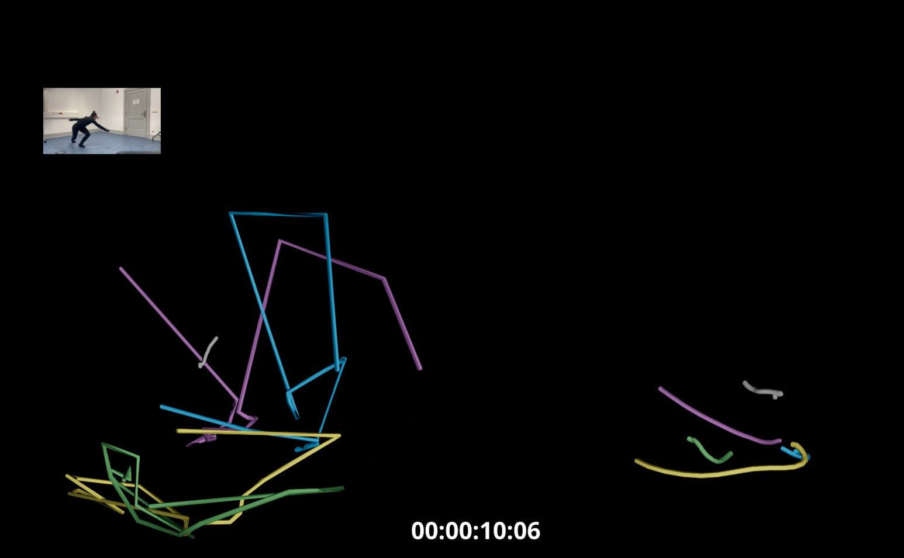
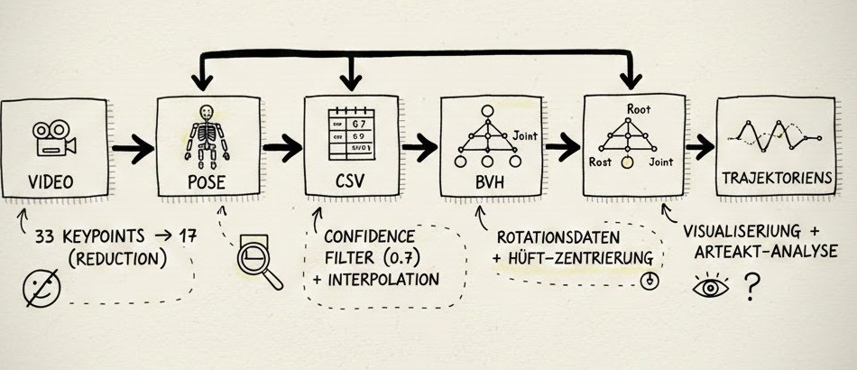
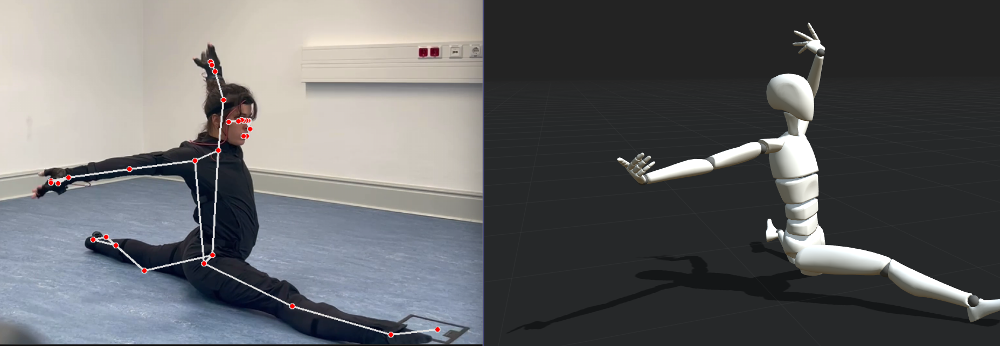

Movement as Data Practice
A research-through-design project exploring how motion capture systems shape movement.

Approach
This project explores how motion capture systems do not simply record movement, but actively shape it.
By comparing sensor-based and vision-based approaches, the work investigates how different systems influence the perception and expression of movement.
- Focus Motion Capture Systems
- Methods Research-through-Design Comparative Analysis
- Tools Rokoko MediaPipe
- Output Trajectory Visualizations Movement Sequences
Process

